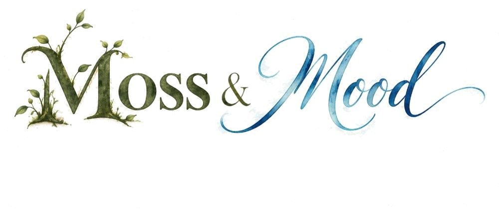
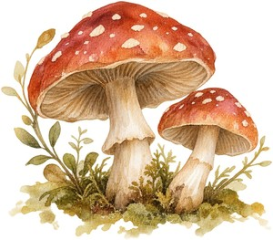
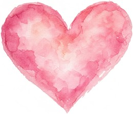
Greetings!
Tap a rock or an element to explore and learn more.
Water
Calm, flowing, reflective.
Water as an element
In the classical elements, Water stands for emotion, intuition and the subconscious. It is soft but powerful: it takes the shape of whatever holds it, wears down stone over time, and always finds its way downhill, around obstacles and back to the sea.
Water moods are slow and deep: rest, healing, dreaming, letting go and going with the flow. In astrology, Water is linked to Cancer, Scorpio and Pisces.
Sacral chakra
Water pairs with the Sacral chakra, just below the navel. This energy center is about emotion, creativity, pleasure and flow. When it is balanced, feelings move through you freely like a stream; when it is blocked, you may feel numb, stuck or overwhelmed. To embody it, sway or circle your hips gently, place a hand below your navel and let your breath ripple like water.
Fun facts
- About 71% of Earth’s surface is covered in water, and roughly 97% of it is salty ocean.
- Your body is around 60% water, and your brain and heart are closer to 70–75%.
- Water is one of the few substances that expands when it freezes, which is why ice floats and lakes freeze from the top down.
- It is the only common substance found naturally as a solid, a liquid and a gas on Earth.
- Raindrops aren’t teardrop-shaped. Small ones are round, and larger ones flatten like a hamburger bun.
- Most of Earth’s fresh water is locked away as ice in glaciers and ice caps.
- The water you drink has been cycling through oceans, clouds and rivers for billions of years.
Earth
Grounded, steady, rooted.
Earth as an element
In the classical elements, Earth stands for stability, the body and the physical world. It is patient and dependable: the ground we stand on, the soil that feeds us and the stone that holds its shape through the seasons.
Earth moods are calm and grounded: comfort, growth, routine, abundance and coming home. In astrology, Earth is linked to Taurus, Virgo and Capricorn.
Root chakra
Earth pairs with the Root chakra at the base of the spine. This energy center is about safety, stability and belonging, the feeling of solid ground under your feet. When it is balanced, you feel secure and present; when it is not, you may feel anxious or unsettled. To embody it, stand barefoot, feel your weight sink into the ground and breathe slowly into the base of your spine.
Fun facts
- Earth is about 4.5 billion years old.
- Its inner core is solid metal, mostly iron and nickel, and is about as hot as the surface of the Sun.
- Earth isn’t a perfect sphere. It bulges slightly at the equator because it spins.
- Only about 29% of Earth’s surface is land. The rest is ocean.
- Mosses are among the oldest land plants, with ancestors going back hundreds of millions of years. They have no true roots and soak up water straight through their leaves.
- Healthy soil takes centuries to build just a few centimeters, and a spoonful of it can hold billions of microorganisms.
Fire
Bold, passionate, energized.
Fire as an element
In the classical elements, Fire stands for energy, passion and transformation. It gives light and warmth, burns away what is no longer needed, and turns one thing into another. It is restless, bright and impossible to hold still.
Fire moods are bold and driven: courage, creativity, motivation and spark. In astrology, Fire is linked to Aries, Leo and Sagittarius.
Solar Plexus chakra
Fire pairs with the Solar Plexus chakra in the upper belly. This energy center is about confidence, will, drive and personal power. When it is balanced, you act with courage and warmth; when it is not, you may feel powerless or burn too hot. To embody it, sit tall, rest a hand on your belly and breathe in warmth, picturing a small flame growing steady and bright.
Fun facts
- Fire isn’t a substance. It is the visible result of a chemical reaction called combustion, which needs heat, fuel and oxygen.
- Blue flames are generally hotter than orange or yellow ones. The yellow glow of a candle comes from tiny glowing soot particles.
- In microgravity, flames burn as small, dim blue spheres instead of the usual teardrop shape.
- The Sun isn’t on fire. It shines through nuclear fusion, not burning.
- Humans were controlling fire at least hundreds of thousands of years ago, and cooking with it likely changed how we evolved.
- Some forests depend on fire. Certain trees, like some pines, release seeds only when heat opens their cones.
Air
Light, curious, free.
Air as an element
In the classical elements, Air stands for thought, communication and freedom. It is invisible but always moving, carrying voices, seeds, scents and weather from place to place. It is light, curious and open.
Air moods are bright and airy: fresh ideas, clarity, curiosity and room to breathe. In astrology, Air is linked to Gemini, Libra and Aquarius.
Heart chakra
Air pairs with the Heart chakra at the center of the chest. This energy center is about love, compassion and connection, and its element is the breath itself. When it is balanced, you can give and receive love openly; when it is not, you may feel guarded or lonely. To embody it, rest a hand on your heart, take slow, deep breaths and let each exhale soften your chest.
Fun facts
- Earth’s air is about 78% nitrogen and 21% oxygen, with a little argon and traces of other gases.
- Air has weight. A cubic meter of it at sea level weighs about 1.2 kilograms.
- Wind is simply air moving from areas of higher pressure to lower pressure.
- Hot air balloons float because warm air is less dense than the cooler air around it.
- Sound travels through air at roughly 343 meters per second at room temperature.
- The sky looks blue because air scatters blue light from the Sun more than red light.
Aether
Dreamy, spiritual, beyond words.
Aether as an element
Aether is the fifth element, added to Earth, Water, Fire and Air. Ancient thinkers saw it as the pure, weightless stuff of the heavens, the spirit that connects everything. It stands for space, wonder, intuition and the unseen.
Aether moods are dreamy and spiritual: awe, stillness, imagination and the feeling of being part of something bigger. In Sanskrit tradition, the matching element is akasha, meaning space.
Throat, Third Eye and Crown chakras
Aether pairs with the Throat chakra, which is about voice, truth and expression, and its element is space and sound. Above it sit the Third Eye, between the brows, for intuition and insight, and the Crown, at the top of the head, for spirit and connection to everything. Many traditions place these two beyond the elements, so Aether is their gateway. To embody them, hum or sing to feel your throat, rest your attention between your brows with closed eyes, and imagine soft light at the crown of your head.
Fun facts
- The Greek philosopher Aristotle described it as a fifth substance that made up the stars and planets. The word quintessence means “fifth essence.”
- In the 1800s, scientists believed light needed an invisible “luminiferous aether” to travel through. An 1887 experiment found no sign of it, and Einstein’s relativity later made it unnecessary.
- The words “ethereal” and “ether” both come from aether.
- Space isn’t perfectly empty. Even between the stars there are a few atoms in every cubic centimeter.
- Much of the carbon and oxygen in your body was made inside stars long ago.
Rabbit Hole
Stars, animals and numbers: a peek at the pattern.
- Sun: Libra ♎︎ · Air
- Moon: Libra ♎︎ · Air
- Rising: Aquarius ♒︎ · Air
- Planet: Venus
- Chinese Zodiac: Tiger · Yang Fire 丙
- Life Path Number: 9
- Birth Number: 11
- Birthstones: Opal · Tourmaline
- Birth Flowers: Cosmos · Marigold
Sun in Libra ♎︎
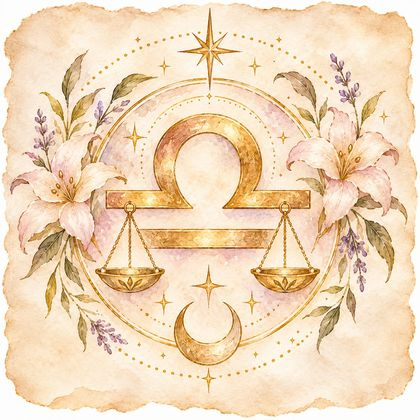
In astrology, the Sun is your core self: your identity, your drive and what makes you feel alive. Libra is a cardinal air sign ruled by Venus and symbolized by the scales. Cardinal is the modality of initiators: cardinal signs open each season, and Libra opens autumn, so it brings a drive to start things, set them in motion and bring people together. It stands for balance, fairness, beauty and partnership. A Libra sun is charming, diplomatic and drawn to harmony, with a strong sense of justice and an eye for what is graceful. The shadow side can be indecision, people-pleasing and avoiding conflict to keep the peace.
Moon in Libra ♎︎
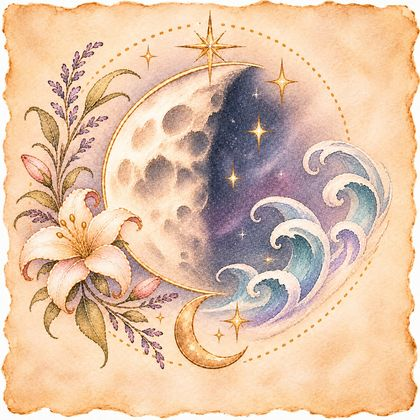
The Moon is your inner world: emotions, instincts and what you need to feel safe. Libra is an air sign, so this Moon tends to feel things through the mind. A Libra moon needs peace, beauty and connection. You tend to work through feelings by talking, weighing both sides and trying to see everyone’s point of view. Tension and unresolved conflict can feel physically uncomfortable.
With both Sun and Moon in Libra, what you show and what you feel match. Astrologers sometimes call this a “double Libra.” It makes you steady in your values and deeply relational, but it can also double the pull toward indecision.
Aquarius Rising ♒︎
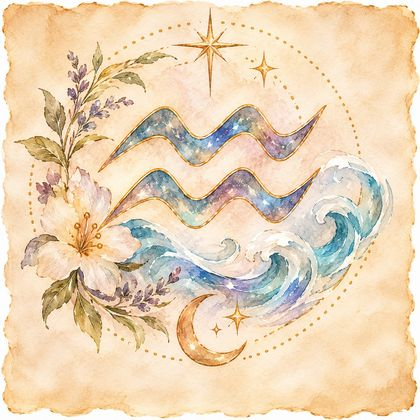
The rising sign, or ascendant, is the mask you show the world and how people first see you. Aquarius is a fixed air sign, traditionally ruled by Saturn and, in modern astrology, by Uranus. With Aquarius rising, you come across as original, independent and a little mysterious. People may see you as a free thinker who marches to your own beat, cool and unbothered on the surface, with a quirky, humanitarian streak.
Libra and Aquarius are both air signs, so your Sun, Moon and Rising all sit in air. That points to a chart that is curious, social, idea-driven and big on communication.
Venus
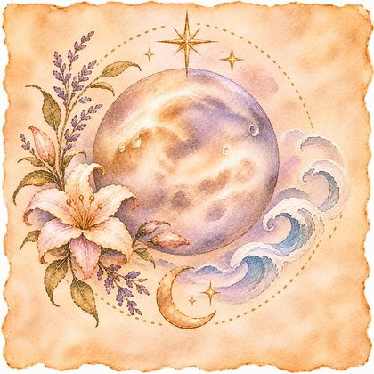
Venus is the ruling planet of Libra, and in astrology it is the planet of love, beauty, harmony and pleasure. It shapes how you give and receive affection, what you value and what you find lovely, from people to art to the colors in a room. Named for the Roman goddess of love, it is the brightest planet in our sky, often seen as the morning or evening star.
A fun bonus: Venus spins backwards compared with most planets, and one of its days lasts longer than its year.
Tiger
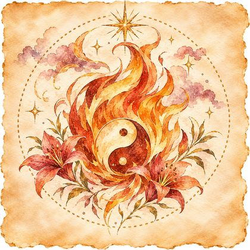
In the Chinese zodiac, the Tiger is a sign of courage, confidence and independence. Your element is Yang Fire, written 丙 (Bǐng), the third of the ten Heavenly Stems in Chinese astrology. It is often compared to the sun: bright, warm and generous. Yang is the active, outward, energetic side, and Fire adds warmth, passion and drive, so this is a bold, fast-moving combination.
- Enthusiastic
- Courageous
- Ambitious
- Adventurous
- Charismatic
Set against all that Libra and Aquarius air, the Tiger is the claws behind the diplomacy, with the fire to act when the scales finally tip.
Life Path 9
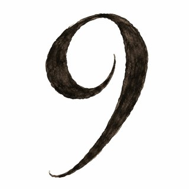
In numerology, your life path number comes from your full birth date and describes the main lessons and purpose of your life. The 9 is the last of the single digits, so it is tied to completion, wisdom and service. Life path 9s are often called the humanitarians or old souls: compassionate, generous, idealistic and creative, with a wish to leave the world better than they found it. Their challenges are giving too much, taking on everyone else’s pain and struggling to let go of the past.
Birth Number 11
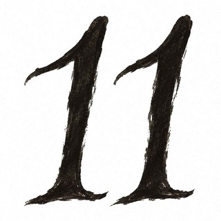
Your birth number comes from the day you were born, and it describes the natural gifts you carry. Eleven is a master number, which numerologists treat as a stronger, more intense version of its root. It is linked to intuition, inspiration and spiritual insight, a sense of being a channel or a light for others. The flip side is high sensitivity, nervous energy and self-doubt. Eleven reduces to 2, the number of partnership and balance, which echoes your Libra side.
Opal & Tourmaline
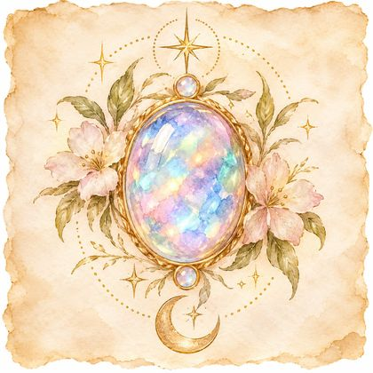
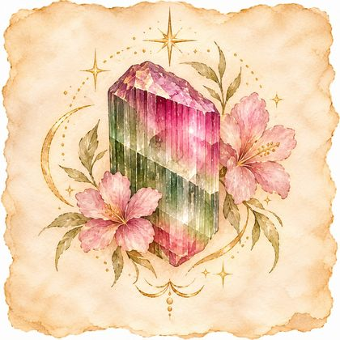
Opal is famous for its play of color, flashes of rainbow that shift as the stone moves. Traditionally it stands for hope, creativity and inspiration, and it is said to amplify emotion and imagination.
Tourmaline comes in a wider range of colors than almost any other gem. Its name is thought to come from a Sinhalese phrase meaning “stone of mixed colors.” It is traditionally linked to protection, grounding and emotional balance. It also has a real-world quirk: when heated or squeezed, it builds up a small electric charge.
Cosmos & Marigold
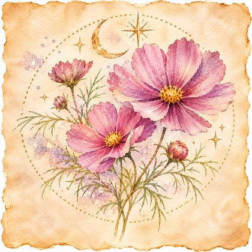
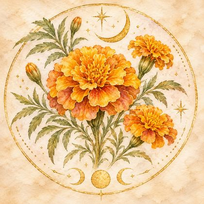
The cosmos flower takes its name from the Greek word kosmos, meaning order and harmony, which echoes your Libra balance. Its delicate, daisy-like blooms stand for peace, joy and a love of beauty, and pollinators adore them.
Marigolds are sun-bright flowers tied to warmth, passion and positive energy. In Mexican Day of the Dead traditions, their vivid petals are used to guide spirits home.
Curious?
Find your own placements with these free birth chart sites:
- Cafe Astrology – free birth chart reports written in plain language
- Astro-Seek – a huge set of free chart tools
- Astro.com – the classic, detailed chart calculator